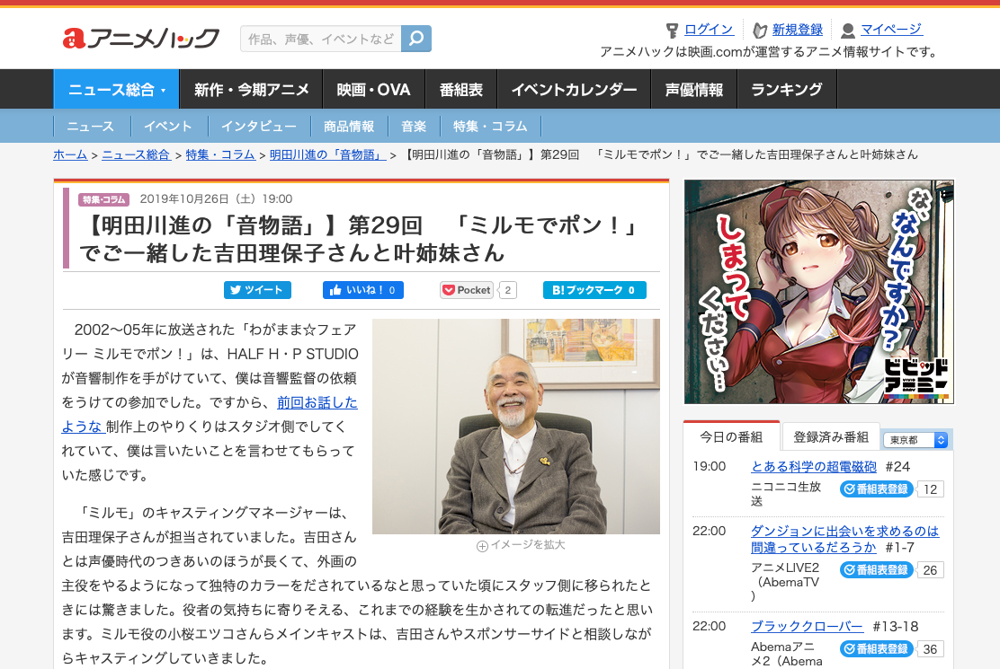

映画.comのアニメ情報サイト「アニメハック」のサイト内にある「明田川進の音物語」にて、インチョ役を演じた岩田光央さんのインタビューが掲載されており、ミルモアニメのアフレコ現場での出来事が書かれています。ん？さん、情報提供いただきありがとうございました！
３年半も続いたアニメだけに、音響さんや声優さんにとってもミルモは大きな存在だったことが伝わってきます。ぜひ再アニメ化した際にも、アニメが長く続いて、いろんな声優さんの活躍の場になればいいですよね。
【明田川進の「音物語」】第29回 「ミルモでポン！」でご一緒した吉田理保子さんと叶姉妹さん
https://anime.eiga.com/news/column/aketagawa_oto/109755/
【明田川進の「音物語」】第33回 岩田光央さんとの対談（後編）声優は“商品”で事務所は“問屋”
https://anime.eiga.com/news/column/aketagawa_oto/110239/
※アニメハックのWebページより引用
(2020/1/8)